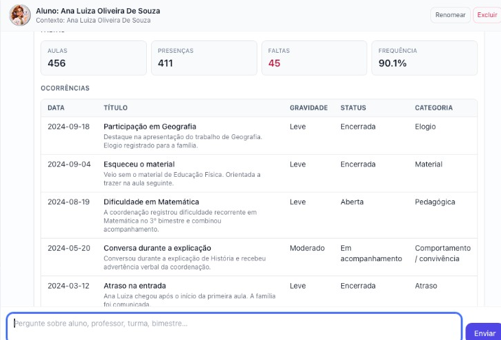
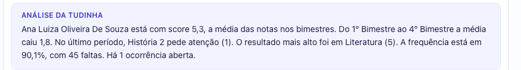

A Tudinha fica no painel administrativo. Você escreve a pergunta e ela responde com texto, tabelas e, quando faz sentido, um painel com números, gráfico e análise.
Tudo cabe em duas ideias: olhar o que já está na escola, ou preparar um registro para você confirmar.
Ela monta o rascunho e pergunta o que falta. Só grava quando você aperta confirmar.
Quando a coordenação pede um relatório geral, um 360 ou o perfil completo, a Tudinha junta o que está espalhado no sistema numa só resposta.

Além dos números, a Tudinha escreve o que os dados sugerem. O texto cita as matérias que caíram, a frequência e a ocorrência aberta, quando houver. Em seguida vêm sugestões concretas para o aluno, para a escola e para a família — com o nome da matéria e o fato daquele aluno, não um conselho genérico.

| Você escreve | Ela mostra |
|---|---|
| Quem é a Ana Luiza? Qual a turma e o RA? | O cadastro do aluno. |
| Boletim do RA 24254 em 2024. | O quadro de notas do ano e o PDF. |
| Nota de Matemática no 1º bimestre da Ana Luiza. | Aquela nota, sem abrir o relatório inteiro. |
| Quantas faltas a Ana Luiza tem em 2024? | Aulas, presenças, faltas e frequência. |
| Tem ocorrência aberta do RA 24254? | A lista, com data, título e situação. |
| Como foram as provas online da Maria Clara no 2º ano B? | Notas, acertos e erros. |
| O que ela errou na última prova de Matemática? | As questões daquela prova. |
| Como estão as jornadas da Ana Luiza? | Concluídas, em andamento e o aproveitamento. |
Falta e ocorrência são coisas diferentes. “Quantas faltas?” olha a frequência. “Tem ocorrência?” olha o registro disciplinar.
Dá para olhar uma turma inteira sem abrir aluno por aluno. Para um retrato geral, peça o panorama. Para só o rendimento, peça a saúde da turma.
O panorama junta as turmas dele, a saúde dos alunos, as provas, as jornadas e os diários que ainda estão pendentes.
Quando a pergunta é maior que uma turma, ela junta as turmas daquela série ou daquele curso e mostra a saúde e a visão de cada turma.
| Você escreve | Ela mostra |
|---|---|
| Quais diários estão em atraso? | Chamadas e registros de aula que passaram do prazo, por turma ou professor. |
| Diários em atraso da professora Ana. | Só os dela. |
| Quem precisa de atenção na escola em 2024? | Alertas de cadastro: aluno sem matrícula no ano ou sem chamada. É organização, não nota. |
| Resultados do bloco Simulado 1. | O resultado daquele simulado e quem precisa de atenção. |
| Quais matérias a escola tem nas provas? | A lista de matérias cadastradas. |
Três registros podem nascer no chat. Em todos, a Tudinha prepara e espera a sua confirmação. Até lá, nada foi gravado.
Ela pergunta o que ainda não foi dito: o que aconteceu, a gravidade, se há outros alunos e se os responsáveis devem ser avisados. Você responde na conversa, ela atualiza o rascunho e só então pede para confirmar.
Serve para a portaria. Diga se é entrada ou saída. Se não falar o horário, ela usa o momento atual.
Marca presente ou falta no diário. Diga o aluno, se faltou ou compareceu, a matéria e o dia. Se o dia não for dito, ela considera hoje.
Troque os nomes pelos da sua escola. Um chat por assunto deixa a resposta mais certeira.
| Situação | Frase |
|---|---|
| Retrato completo do aluno | Me dá um relatório 360 da Ana Luiza. |
| Só o boletim | Boletim do RA 24254 em 2024. |
| Uma nota | Nota de Matemática no 1º bimestre da Ana Luiza. |
| Frequência | Quantas faltas a Ana Luiza tem neste ano? |
| Ocorrências do aluno | Tem ocorrência aberta do RA 24254? |
| Provas online | Como andam as provas da Maria Clara no 2º ano B? |
| O que errou | O que ela errou na última prova? |
| Jornadas | Como estão as jornadas da Ana Luiza? |
| Turma inteira | Relatório geral da turma 2º ano B. |
| Quem preocupa na turma | Como está a saúde da turma 2ªB? |
| Aula de hoje | Qual aula a turma 1A tem hoje? |
| Professor | Panorama da professora Ana. |
| Série inteira | Panorama do 1º ano. |
| Diário atrasado | Quais diários estão em atraso? |
| Simulado | Resultados do bloco Simulado 1. Quem precisa de atenção? |
| Nova ocorrência | Quero registrar uma ocorrência para a Ana Luiza. |
| Portaria | Registra a saída da Ana Luiza agora. |
| Chamada | Marca falta da Ana Luiza hoje em Matemática. |
EducaTudo · Tudinha no painel da escola · guia para a equipe · novembro de 2026